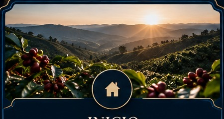
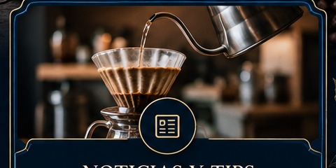

Origen
Fincas y productores
Damos visibilidad a las regiones y a las personas que están detrás del café colombiano.
Más que café, es cultura.
En CafeQuevedo queremos conectar a las personas con el origen de una buena taza. Vendemos café de especialidad colombiano y creamos talleres para aprender a prepararlo, conocer sus variedades, entender sus procesos y descubrir la historia que existe detrás de cada grano.
Conoce nuestro proyecto →Queremos que en Colombia no solo produzcamos un gran café: queremos aprender a reconocerlo, prepararlo y valorarlo.

Damos visibilidad a las regiones y a las personas que están detrás del café colombiano.

V60, prensa francesa, Chemex, AeroPress, molienda, proporción, agua y temperatura.
Explicamos cómo la genética, el proceso y el territorio cambian el café y cómo este producto se relaciona con la historia de Colombia.
“Vivimos en el país con el mejor café del mundo y no sabemos tomar café, esto no puede seguir así. ¡Demostremos que de donde sale el mejor café, salen los mejores cafeteros!”
Buscamos mejorar en Colombia la forma de tomar, vender y entender el café, mostrar sus beneficios, corregir errores comunes y revelar la ciencia y la magia de su preparación.
Este será el espacio que iremos actualizando con nuevas experiencias, talleres, visitas a fincas y descubrimientos.
Altura, clima, suelo, variedad genética y proceso pueden transformar por completo una taza. Dos cafés colombianos pueden ser excelentes y, aun así, tener perfiles totalmente diferentes.
Esta semana desarrollamos nuestra estrategia de negocio: definimos la identidad de CafeQuevedo, la línea estratégica de la empresa, el plan de acción y la forma en que evaluaremos los resultados.
También analizamos cómo utilizar Big Data para conocer las preferencias de nuestros clientes, mejorar los talleres, identificar los cafés más valorados y tomar decisiones basadas en información.
CafeQuevedo sigue creciendo y esta semana abrimos nuestro perfil oficial de Instagram. Allí compartiremos contenido sobre café de especialidad, métodos de preparación, talleres, recomendaciones, curiosidades y avances de nuestro proyecto.
Visitar @cafequevedo1940 en Instagram →
La Federación Nacional de Cafeteros reportó para el 16 de octubre de 2026 un precio interno de referencia de $2.160.000 COP por carga de 125 kg de café pergamino seco. Para ese mismo día, la cotización de referencia en la Bolsa de Nueva York fue de 305,60 centavos de dólar por libra.
Para CafeQuevedo, este tipo de información es importante porque muestra cómo las condiciones del mercado afectan tanto a los productores como al precio final del café. También refuerza la importancia de reconocer el origen, la calidad y el trabajo que existe detrás de cada taza.
Fuente: Federación Nacional de Cafeteros de Colombia, información publicada el 16 de octubre de 2026. Consultar fuente
Esta semana avanzamos en dos temas importantes para CafeQuevedo: la estrategia de marketing digital e inbound y la ejecución del plan estratégico. Ambas presentaciones buscan convertir nuestras ideas en acciones concretas, medibles y sostenibles.
Explica cómo CafeQuevedo puede utilizar redes sociales, artículos, videos educativos y newsletter en las etapas de atraer, convertir, cerrar y fidelizar clientes.
Ver presentación en Canva →Presenta el objetivo estratégico de CafeQuevedo, sus líneas de acción, responsables, indicadores de seguimiento, ciclo de mejora y prioridades para los próximos 90 días.
Ver presentación en Canva →Consejos, imágenes, curiosidades y contenidos sobre café de especialidad y preparación.
El café pierde aromas rápidamente después de molerse. Si puedes, muele solo la cantidad que vas a utilizar.
Una mirada práctica a cómo los servicios financieros digitales pueden ayudarnos a administrar mejor el dinero personal, familiar y empresarial.
La economía digital ha cambiado la manera en que pagamos, ahorramos, vendemos y controlamos nuestros gastos. Las empresas Fintech combinan finanzas y tecnología para ofrecer pagos digitales, billeteras, transferencias, crédito, ahorro, inversión y herramientas de administración financiera desde aplicaciones y plataformas web.
La administración financiera no consiste solamente en saber cuánto dinero entra. También implica entender en qué se gasta, cuánto se ahorra, qué deudas existen y qué riesgos se están tomando. En el entorno digital tenemos una ventaja: gran parte de esa información queda registrada y puede analizarse.
Revisar movimientos bancarios y clasificarlos por categorías permite descubrir fugas de dinero.
Asignar límites para alimentación, vivienda, ocio, deuda y ahorro ayuda a evitar gastos impulsivos.
Comparar tasas, cuotas y fechas de pago permite identificar si el endeudamiento está creciendo demasiado.
Separar una cantidad periódica para emergencias o proyectos muestra capacidad de planificación.
Usar contraseñas únicas, alertas y autenticación de dos factores reduce riesgos financieros digitales.
Comparar lo planeado con lo realmente gastado convierte los datos en decisiones.
Presupuesto constante, ahorro periódico, pagos puntuales, baja deuda, uso seguro de plataformas y conocimiento de los gastos.
Compras impulsivas, falta de registro, uso frecuente de crédito sin planificación, ausencia de ahorro y poca protección de las cuentas.
Para CafeQuevedo, la tecnología financiera debe utilizarse como una herramienta de control y crecimiento, no solamente como una forma de recibir pagos. Nuestra estrategia se basa en cuatro acciones:
Usar una cuenta exclusiva para CafeQuevedo y no mezclar ingresos del negocio con gastos personales o familiares.
Recibir pagos por transferencia, QR o pasarela confiable y registrar automáticamente ventas, talleres y gastos.
Definir porcentajes para compra de café, empaques, talleres, publicidad, ahorro, impuestos y fondo de emergencia.
Revisar mensualmente ventas, costos, utilidad, clientes recurrentes y productos más vendidos antes de invertir o endeudarse.
Podemos utilizar una hoja de cálculo compartida o software contable para el flujo de caja, una cuenta empresarial, pagos mediante QR o transferencia, facturación y comprobantes digitales, alertas bancarias y un tablero mensual con indicadores básicos.
“La tecnología financiera puede hacer más fácil mover el dinero; la educación financiera es la que nos enseña a decidir qué hacer con él.”
Banco de la República de Colombia — contenidos de educación económica y financiera · Superintendencia Financiera de Colombia — protección al consumidor financiero · OECD — educación y alfabetización financiera · Banco Mundial — inclusión y servicios financieros digitales.